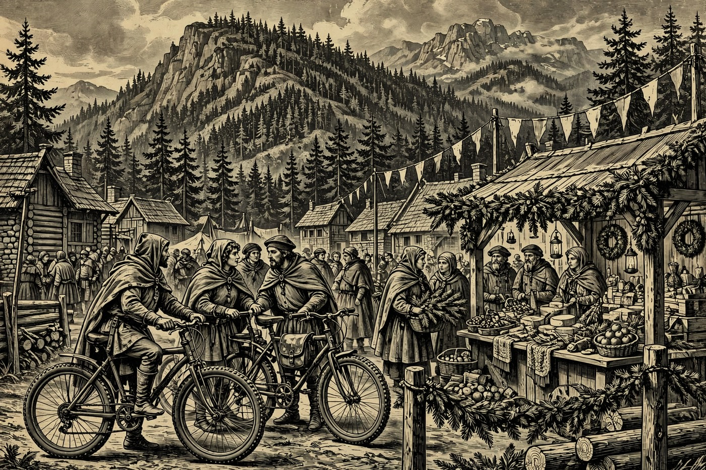

PAYSON — Hail, wayfarer, and pull your cloak close — Fredas dawns grey and cool over the Rim, with the pines standing quiet under a blanket of cloud and a fair breeze to hurry you along the road. The Holds are in fine Friday fettle: fish fries sizzle in Payson and Pine, Sedona’s red rocks ring with the great Mountain Bike Festival all weekend, and Show Low serves soup in hand-made bowls for a good cause. Word from the road brings glad tidings, too — the first North Inch Renaissance Faire at the Payson Golf Course last month was such a success that its organizers are already planning next year’s. By the Nine, there is plenty to do before the early 5:27 sunset — choose your adventure below.
Happening in the Holds Today
 Payson— Payson Elks Lodge Friday Fish Fry — 5:30–7:30 PM at the Payson Elks Lodge, 1206 N Beeline Hwy. The Lodge opens the big Howlin’ at the Moon dual-sport weekend with its weekly Friday fish fry, and riders and locals alike are welcome at the table. Expect a home-style fried-fish supper in good company before Saturday’s forest loops roll out. It is the easy way for Hearth guests to meet the rider crowd without throwing a leg over a bike. Come hungry and come early — lodge suppers fill fast on event weekends.— Band of Fools at The Roadhouse — live music Friday night, 8:00 PM to midnight, at The Roadhouse in Payson. After the fish fry, the town keeps its Friday going with a late set of live band fare for folks who like their evenings with a tune in them. Dinner first, then music — the classic small-town Friday, done properly. Check the Bandsintown listing or the venue for cover and seating before you head out. A fine nightcap for guests not ready for an early bed.— GrannyCore Christmas Sale — an early Christmas sale running Friday and Saturday, Nov. 6–7, here in Payson (from the Hold’s yard-and-estate-sales sheet). Think cozy, handmade, and vintage-leaning holiday goods — the kind of sale where the best treasures go to the early birds. It pairs nicely with Saturday’s Noel Christmas Market at Noley’s for a full weekend of gift hunting. If your hearth needs trimming before the season crowds arrive, this is your opening move. No web page stands for it — ask around town and follow the sale signs.
Payson— Payson Elks Lodge Friday Fish Fry — 5:30–7:30 PM at the Payson Elks Lodge, 1206 N Beeline Hwy. The Lodge opens the big Howlin’ at the Moon dual-sport weekend with its weekly Friday fish fry, and riders and locals alike are welcome at the table. Expect a home-style fried-fish supper in good company before Saturday’s forest loops roll out. It is the easy way for Hearth guests to meet the rider crowd without throwing a leg over a bike. Come hungry and come early — lodge suppers fill fast on event weekends.— Band of Fools at The Roadhouse — live music Friday night, 8:00 PM to midnight, at The Roadhouse in Payson. After the fish fry, the town keeps its Friday going with a late set of live band fare for folks who like their evenings with a tune in them. Dinner first, then music — the classic small-town Friday, done properly. Check the Bandsintown listing or the venue for cover and seating before you head out. A fine nightcap for guests not ready for an early bed.— GrannyCore Christmas Sale — an early Christmas sale running Friday and Saturday, Nov. 6–7, here in Payson (from the Hold’s yard-and-estate-sales sheet). Think cozy, handmade, and vintage-leaning holiday goods — the kind of sale where the best treasures go to the early birds. It pairs nicely with Saturday’s Noel Christmas Market at Noley’s for a full weekend of gift hunting. If your hearth needs trimming before the season crowds arrive, this is your opening move. No web page stands for it — ask around town and follow the sale signs. Pine-Strawberry— First Friday Fish Fry and Bingo — at the Pine Strawberry Community Center, 3916 AZ-87, Pine. Fish is served from 4:30 PM (plates $7/$12/$15, with homemade pie at $5), and bingo follows at 6:00 PM. This is the twin villages’ social anchor of the month — neighbors, winter visitors, and Hearth guests all at the long tables together. Expect a community-center supper, bingo cards, and small-town prizes rather than a commercial show. Come for the fish, stay for the bingo, and bring a little cash for the pie.
Pine-Strawberry— First Friday Fish Fry and Bingo — at the Pine Strawberry Community Center, 3916 AZ-87, Pine. Fish is served from 4:30 PM (plates $7/$12/$15, with homemade pie at $5), and bingo follows at 6:00 PM. This is the twin villages’ social anchor of the month — neighbors, winter visitors, and Hearth guests all at the long tables together. Expect a community-center supper, bingo cards, and small-town prizes rather than a commercial show. Come for the fish, stay for the bingo, and bring a little cash for the pie. Sedona— Sedona Mountain Bike Festival — Friday through Sunday, Nov. 6–8, 9:00 AM–7:00 PM, at Posse Grounds Park, 525 Posse Grounds Rd. One of the nation’s premier mountain-bike festivals, with more than 90 vendors and more demo bikes than any other festival of its kind. Three days of demos, shuttled rides to 250-plus miles of red-rock singletrack, guided rides, and skills clinics for beginners through experts. Add live entertainment, food trucks, and a beer garden, and the whole park hums all weekend. New this year: a Shuttle-Only Pass for riders who just want maximum trail time.— 1st Friday in the Galleries — Friday, 4:00–7:00 PM, at galleries across Sedona, including Tlaquepaque Arts & Shopping Village, 336 State Route 179. Sedona’s galleries open together with new exhibitions, artist receptions, music, and treats — free and open to everyone. At Tlaquepaque, Mountain Trails Galleries launches a small-works show, and Creative Gateways paints live from a blank canvas. The Village Gallery in the Village of Oak Creek hosts its own reception from 5:00–8:00 PM. An easy, walkable evening — come and go from gallery to gallery as you please.— FAMoS First Friday Reception — Curt Walters: A Lifetime of Art — Friday, 5:00–8:00 PM at the Sedona Heritage Museum, with a live interview at 5:45 PM. The Fine Art Museum of Sedona hosts this free reception for the Grand Canyon plein-air master, whose show gathers works painted after he moved to Sedona in 1979. Admission is free and refreshments are served. It is a quieter, sit-down counterpoint to the gallery stroll. Guests who love landscape painting should not miss it.
Sedona— Sedona Mountain Bike Festival — Friday through Sunday, Nov. 6–8, 9:00 AM–7:00 PM, at Posse Grounds Park, 525 Posse Grounds Rd. One of the nation’s premier mountain-bike festivals, with more than 90 vendors and more demo bikes than any other festival of its kind. Three days of demos, shuttled rides to 250-plus miles of red-rock singletrack, guided rides, and skills clinics for beginners through experts. Add live entertainment, food trucks, and a beer garden, and the whole park hums all weekend. New this year: a Shuttle-Only Pass for riders who just want maximum trail time.— 1st Friday in the Galleries — Friday, 4:00–7:00 PM, at galleries across Sedona, including Tlaquepaque Arts & Shopping Village, 336 State Route 179. Sedona’s galleries open together with new exhibitions, artist receptions, music, and treats — free and open to everyone. At Tlaquepaque, Mountain Trails Galleries launches a small-works show, and Creative Gateways paints live from a blank canvas. The Village Gallery in the Village of Oak Creek hosts its own reception from 5:00–8:00 PM. An easy, walkable evening — come and go from gallery to gallery as you please.— FAMoS First Friday Reception — Curt Walters: A Lifetime of Art — Friday, 5:00–8:00 PM at the Sedona Heritage Museum, with a live interview at 5:45 PM. The Fine Art Museum of Sedona hosts this free reception for the Grand Canyon plein-air master, whose show gathers works painted after he moved to Sedona in 1979. Admission is free and refreshments are served. It is a quieter, sit-down counterpoint to the gallery stroll. Guests who love landscape painting should not miss it. Show Low— NPC Empty Bowls — Friday, 11:00 AM–2:00 PM, at Northland Pioneer College’s Show Low campus, Aspen Center Room 103, 1001 W. Deuce of Clubs. For a suggested $10 donation, you pick a hand-crafted ceramic bowl, fill it with soup donated by Persnikkity’s plus fresh bread — and keep the bowl. Every dollar goes to the RE:center, a local nonprofit working on health, safety, and self-sufficiency. This year adds a plant and art sale for student scholarships. No reservations — first come, first served, cash or check at the door.— Fiber Arts Gathering at NPC — Friday on the same Show Low campus, 1001 W. Deuce of Clubs. The college calendar invites one and all: “Interested in the fiber arts? Join us!” A drop-in makers’ circle for knitters, weavers, and stitchers of every level. Pair it with the Empty Bowls luncheon for a full and friendly campus visit. Check the NPC calendar for the room and hour before you go.
Show Low— NPC Empty Bowls — Friday, 11:00 AM–2:00 PM, at Northland Pioneer College’s Show Low campus, Aspen Center Room 103, 1001 W. Deuce of Clubs. For a suggested $10 donation, you pick a hand-crafted ceramic bowl, fill it with soup donated by Persnikkity’s plus fresh bread — and keep the bowl. Every dollar goes to the RE:center, a local nonprofit working on health, safety, and self-sufficiency. This year adds a plant and art sale for student scholarships. No reservations — first come, first served, cash or check at the door.— Fiber Arts Gathering at NPC — Friday on the same Show Low campus, 1001 W. Deuce of Clubs. The college calendar invites one and all: “Interested in the fiber arts? Join us!” A drop-in makers’ circle for knitters, weavers, and stitchers of every level. Pair it with the Empty Bowls luncheon for a full and friendly campus visit. Check the NPC calendar for the room and hour before you go. Prescott— Anthony Mazzella — Legends of Guitar — Friday, 7:00 PM, at the Prescott Elks Theatre, 117 E. Gurley St. The acclaimed virtuoso plays every note live in a high-energy tribute to the world’s iconic guitarists. Expect Hendrix, Clapton, Page, Gilmour, Harrison, Van Halen, and even Segovia in one solo show. The historic Elks Theatre on Gurley Street is half the pleasure — arrive early and soak it in. A strong Friday-night anchor for music lovers willing to make the Prescott drive.— Prescott History Tour — Friday, 10:00 AM–12:00 PM, downtown Prescott, from Whiskey Row to Nob Hill. A guided two-hour walk through the landmarks of Arizona’s original territorial capital, with the people and stories that shaped it. Daytime, outdoors, and easy-paced — a fine first introduction to Prescott for new visitors. The tour is run by Freaky Foot Tours; check the Signals AZ listing for the meeting point. Sturdy shoes and a curious mind are all you need.
Prescott— Anthony Mazzella — Legends of Guitar — Friday, 7:00 PM, at the Prescott Elks Theatre, 117 E. Gurley St. The acclaimed virtuoso plays every note live in a high-energy tribute to the world’s iconic guitarists. Expect Hendrix, Clapton, Page, Gilmour, Harrison, Van Halen, and even Segovia in one solo show. The historic Elks Theatre on Gurley Street is half the pleasure — arrive early and soak it in. A strong Friday-night anchor for music lovers willing to make the Prescott drive.— Prescott History Tour — Friday, 10:00 AM–12:00 PM, downtown Prescott, from Whiskey Row to Nob Hill. A guided two-hour walk through the landmarks of Arizona’s original territorial capital, with the people and stories that shaped it. Daytime, outdoors, and easy-paced — a fine first introduction to Prescott for new visitors. The tour is run by Freaky Foot Tours; check the Signals AZ listing for the meeting point. Sturdy shoes and a curious mind are all you need.
The Days Ahead
- Sat, Nov. 7— Howlin’ at the Moon Dual Sport Ride — Saturday and Sunday at the Payson Elks Lodge, 1206 N Beeline Hwy. Arizona Trail Riders’ two-day rally rides a 110–120 mile forest loop Saturday (check-in 6:00–8:00 AM) and shorter 50–60 mile loops Sunday, with breakfast at the Lodge both mornings and a home-cooked Elks dinner Saturday at 5:30 PM. Registration closed Oct. 26 and the listing marks it sold out — so print this as a spectacle, not a sign-up. The town will buzz with bikes all weekend, and the Lodge is the place to watch it gather. Rain or shine, the riders ride.— Gila County Gem & Mineral Society Fall Show & Sell — Saturday, 9:00 AM–2:00 PM, free admission, at Bullion Plaza, 150 Plaza Circle, Miami. Vendors sell gems, minerals, jewelry, and rough rock, with rockhounds and jewelry makers on hand to visit with — a small, friendly one-day show. Popcorn and water are sold on site, with food and coffee trucks alongside. Mind the early 2:00 PM close if you are driving down from Payson. A perfect Saturday prize for anyone who loves what the Rim is made of.— Rim Country Marine Corps Ball — Saturday evening at the Mazatzal Hotel & Casino, Payson. Marine Corps League Detachment #928’s formal birthday ball: social hour at 5:00 PM, ceremony at 6:00 PM (no admittance during the ceremony), dinner at 7:00 PM, then a raffle and dancing. Tickets are $50 per person on the reservation form at rimcountrymarines.org. It anchors Payson’s Veterans-week season in full dress style. Late ticket availability is not confirmed — call ahead before dressing up.— Don’t Sweat It, Shred It! — Free Shred Event — Saturday, 9:00 AM–1:00 PM, at Camp Verde Town Hall, 473 S. Main St. AARP’s free secure-shredding stop: sensitive papers do not belong in the recycling bin, so bring them for safe on-site shredding. It is a practical errand that protects against fraud, and it costs nothing. Pair it with a Camp Verde morning — Montezuma Castle or Fort Verde — and lunch after. Drive up, shred, and leave lighter.— Noel Christmas Market at Noley’s — Saturday at Noley’s Books, Art & Whatnot, 103 E. State Hwy 260, Payson. An early-season Christmas market at Payson’s beloved book-bar and gathering place, carried from the Hold’s own listings. Expect local makers, books, art, and holiday goods in Noley’s cozy rooms. It makes a fine Saturday pair with Friday’s GrannyCore sale for gift hunters. No web page stands for the market — check Noley’s own page or just come by and see.
- Sun, Nov. 8— The Thirsty Band at AZTEX Coffee and Taproom — Sunday, 1:00 PM, in Show Low. A relaxed Sunday-afternoon live set at a coffee-and-taproom — the gentle end of a busy weekend. The band returns to the same room Friday, Nov. 13, so locals get two chances. Good low-key fare for guests overnighting in the White Mountains. Check the Bandsintown listing for cover and updates before going.
- Mon, Nov. 9— United Food Bank — Payson Food Distribution — Monday, 9:00–11:00 AM, at 601 AZ-260, Payson. A drive-through distribution of produce and pantry staples, listed in the Holiday Helpings roundup for families getting ready for Thanksgiving. The listing notes a turkey is not guaranteed at this stop — come for the groceries, not a promise. This is a know-where-to-send-folks item: pass the word to any neighbor who could use a hand. Volunteers and donations are the other way to take part.
- Wed, Nov. 11— Prescott Veterans Day Parade — Wednesday in downtown Prescott; opening ceremonies 10:30 AM at Cortez and Union, parade at 11:00 AM around Courthouse Plaza. This year’s theme, from the City itself: “Remember the Past. Serve the Present. Inspire the Future.” Entries compete in seven categories plus Best Overall, and the whole community is invited, free. Arrive before 10:30 for the ceremony and a good spot on Cortez Street. A worthy midweek drive for every guest who honors those who served.